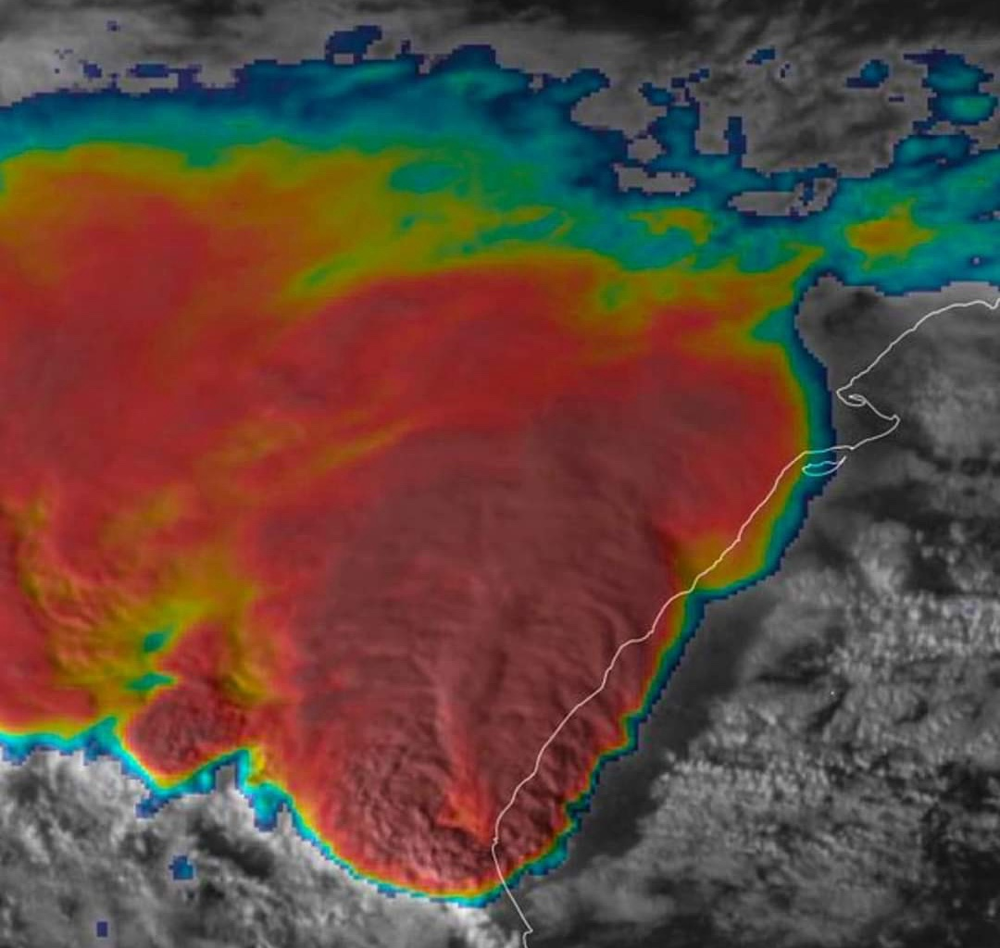

Il 29 ottobre 2024, la DANA ha colpito con una violenza senza precedenti la Comunità Valenciana, scatenando piogge torrenziali concentrate in poche ore. In località come Turís, sono stati registrati 179,4 mm di pioggia in un’ora, un valore record a livello nazionale. I fiumi Magro e Júcar non hanno retto all’enorme quantità d’acqua e sono esondati, sommergendo ampie porzioni di territorio e trasformando strade e piazze in fiumi in piena. Le città di Utiel e Torrent sono risultate tra le più colpite, con decine di quartieri completamente allagati. Molti cittadini si sono ritrovati bloccati nelle proprie case, sui tetti o nelle automobili, senza la possibilità di mettersi in salvo autonomamente.

Le conseguenze immediate sono state drammatiche: interruzioni di corrente, crollo delle comunicazioni e il blocco totale dei trasporti. Migliaia di persone sono rimaste isolate per ore, in attesa dei soccorsi. L’esercito spagnolo è stato mobilitato in tempi record, mettendo in campo risorse e mezzi per affrontare quella che è stata definita la più grande operazione di soccorso in tempi di pace nella storia del paese. Squadre di emergenza, elicotteri e mezzi anfibi sono intervenuti per trarre in salvo la popolazione, portare beni di prima necessità e garantire un minimo di supporto sanitario. L’intervento delle forze armate è stato decisivo per evitare una catastrofe umanitaria ancora più grave.
